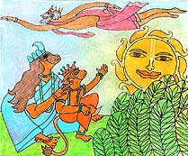
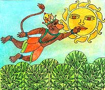
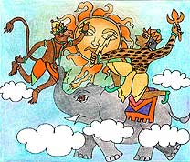

<html>
<!-- Mirrored from www.damodara.de/espaniol/html/jiva_tattva/Hanuman/Hanuman_02.htm by HTTrack Website Copier/3.x [XR&CO'2013], Sun, 23 Feb 2014 07:32:33 GMT -->
<head>
<title>Indra golpea a Hanuman con su Rayo</title>
<meta http-equiv="Content-Type" content="text/html; charset=iso-8859-1">
</head>

<body bgcolor="#FFFFFF" text="#000000">
<table width="45%" border="0" cellspacing="15" cellpadding="0" align="center" bordercolor="#FFFFFF" bgcolor="#FFFFFF">
  <tr> 
    <td width="381" height="76"> 
	<blockquote>
      <div align="center"> 
          <p align="center"><span lang=ES-TRAD
style='font-size:14.0pt;mso-bidi-font-size:10.0pt'><font face="Comic Sans MS"><o:p></o:p></font></span><span lang=ES-TRAD
style='font-size:14.0pt;mso-bidi-font-size:10.0pt'><font face="Comic Sans MS"><font size="3">Esta 
            es la historia de alguna de sus entretenidas aventuras, que comienzan 
            en el hermoso valle de flores, donde Hanuman un día, sentado junto 
            a su madre tomaba los tibios rayos del sol.</font></font> </span></p>
        </div>
	  </blockquote>
    </td>
  </tr>
  <tr> 
    <td height="39" width="381"> 
      <div align="center">
        <p><font face="Comic Sans MS"><span lang=ES-TRAD
style='font-size:14.0pt;mso-bidi-font-size:10.0pt'><a href="../../../images/galeria/colores/radha%20m%20gopal/index.html"></a></span></font></p>
        <p><span lang=ES-TRAD
style='font-size:14.0pt;mso-bidi-font-size:10.0pt'><font face="Comic Sans MS"><font size="2"><b>Hanuman 
          tomaba los tibios rayos del sol.</b></font></font></span></p>
      </div>
    </td>
  </tr>
  <tr> 
    <td width="381"> 
      <blockquote> 
        <div align="center"> <font face="Comic Sans MS"><span lang=ES-TRAD style='font-size:14.0pt;'><font size="3">Hanuman 
          miró al cielo y vio el sol.</font></span></font></div>
        <div align="center"><font face="Comic Sans MS" size="3">¡Me encanta el 
          Sol!  -dijo el pequeño niño- </font><font face="Comic Sans MS" size="3">¡Es 
          tan hermoso, tan cálido, tan dorado y brillante!  ¡Me encantaría tomarlo 
          y jugar con él, como si fuera solamente mío!</font></div>
        <div align="center"><font face="Comic Sans MS" size="3">Entonces, Hanuman 
          estiró sus brazos  hacia el sol, lo tomó entre sus manos y empezó a 
          lanzarlo hacia arriba y hacia abajo como si fuera una pelota.  Al Sol, 
          todo esto no le pareció nada agradable  y empezó a enfurecerse.</font></div>
      </blockquote>
    </td>
  </tr>
  <tr> 
    <td width="381"> 
      <div align="center">
        <p><a href="../../../images/galeria/colores/radha%20m%20gopal/index.html"></a></p>
        <p><font face="Comic Sans MS" size="2"><b>Hanuman salt&oacute; hacia el 
          Sol para jugar con el</b></font></p>
      </div>
    </td>
  </tr>
  <tr> 
    <td width="381" height="365"> 
      <blockquote> 
        <div align="center"><font face="Comic Sans MS"><span lang=ES-TRAD
style='font-size:14.0pt;'><font size="3">El sol llamaba a Indra, el semidios de 
          los truenos y relámpagos, quien en ese momento, andaba paseando por 
          el cielo en su elefante mágico.</font></span></font></div>
        <div align="center"><font face="Comic Sans MS"><span lang=ES-TRAD style='font-size:14.0pt;'><font size="3">¡Auxilio 
          Indra! ¡Mira lo que este travieso niño está haciendo conmigo! ¡Auxilio!</font></span></font></div>
        <div align="center"><font face="Comic Sans MS" size="3">Indra vio lo que 
          Hanuman estaba haciendo, y se sintió muy disgustado.   De pronto, el 
          cielo se oscureció y las nubes de tormenta empezaron a juntarse.</font><font face="Comic Sans MS" size="1"></font></div>
        <div align="center"> 
          <p><font face="Comic Sans MS" size="3"><span lang=ES-TRAD style='font-size:14.0pt;'>¡</span>Pon 
            al sol en Su lugar inmeditamente! -grito Indra con voz fuerte- No! 
            -dijo Hanuman- quien no parec&iacute;a asustarse con la furia de los 
            semidioses.</font></p>
          <p><font face="Comic Sans MS" size="3">Entonces, Indra encolerizado, 
            le lanz&oacute; a Hanuman un rayo que lo golpe&oacute; y lo dej&oacute; 
            inconciente.</font></p>
          <p><font face="Comic Sans MS" size="3">Zaap!</font></p>
        </div>
      </blockquote>
    </td>
  </tr>
  <tr> 
    <td height="2" width="381"> 
      <div align="center">
        <p><a href="../../../images/galeria/colores/radha%20m%20gopal/index.html"></a></p>
        <p><font face="Comic Sans MS" size="2"><b>El Rey Indra golpe&oacute; a 
          Hanuman con su poderoso Rayo</b></font></p>
      </div>
    </td>
  </tr>
  <tr> 
    <td bgcolor="#FFFFFF" width="381"> 
      <div align="center"><font face="Comic Sans MS"><a href="Hanuman_01.html"></a><a href="Hanuman.html"></a> 
        <a href="Hanuman_03.html"></a></font></div>
    </td>
  </tr>
</table>
<p>&nbsp;</p>
<p>&nbsp;</p>
</body>
<!-- Mirrored from www.damodara.de/espaniol/html/jiva_tattva/Hanuman/Hanuman_02.htm by HTTrack Website Copier/3.x [XR&CO'2013], Sun, 23 Feb 2014 07:32:36 GMT -->
</html>
